ScriptLab: Regeln und Daten einfacher bearbeiten
Echte Windows-Aufnahmen mit synthetischen Daten vom 30. Oktober 2026.
Änderungen und Prüfgrenzen ·
Einzelnachweis
Einfacher Filter: vorher und nachher
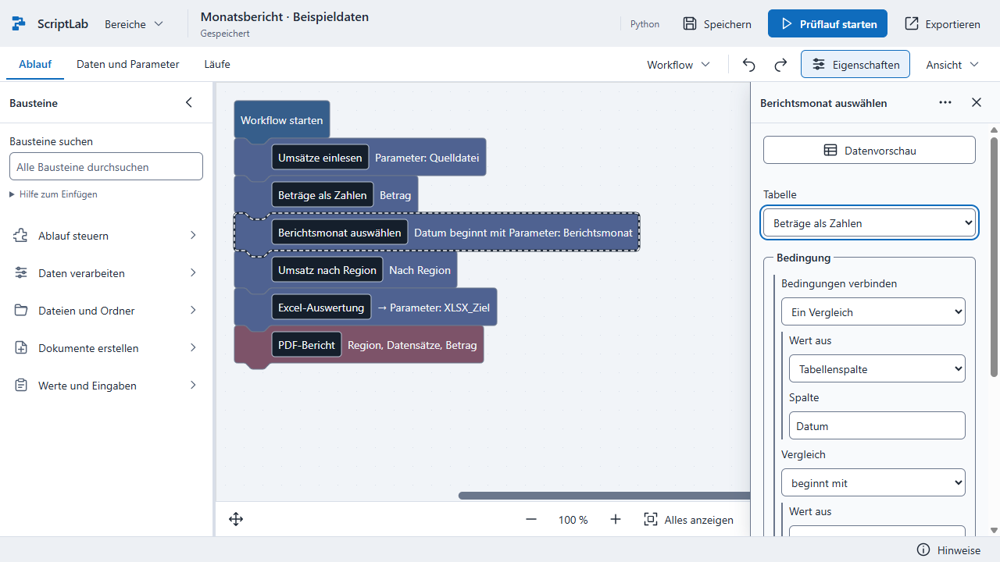
Vorher: Die Auswahl der Ausdrucksarten verdrängt den Vergleichswert nach unten.
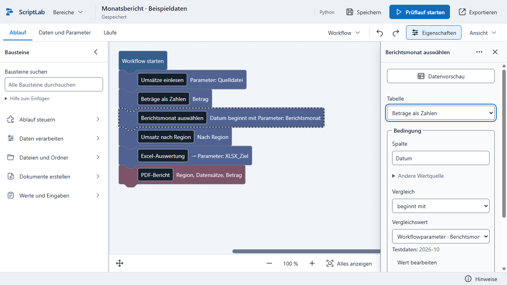
Nachher: dieselbe Beispielaufgabe mit direkter Bearbeitung von Spalte, Vergleich und Wert.
Zuordnungen und Spalten
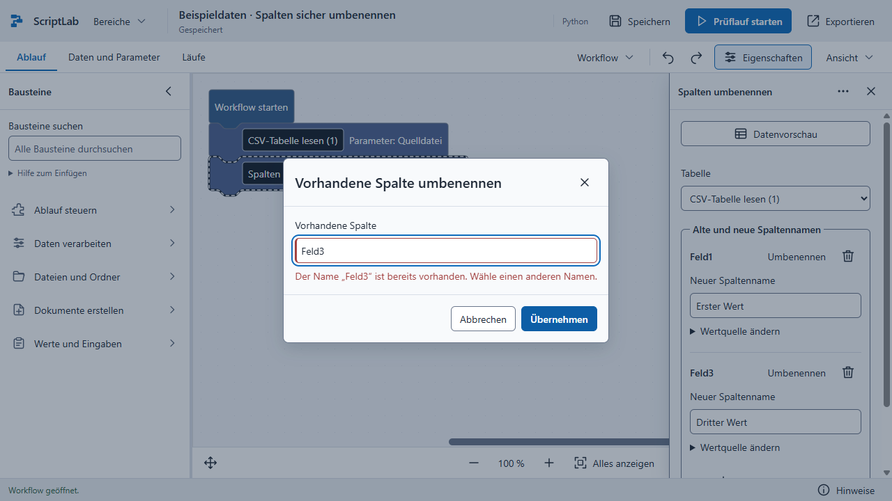
Ein bereits vorhandener Name verändert keine der bisherigen Zuordnungen.
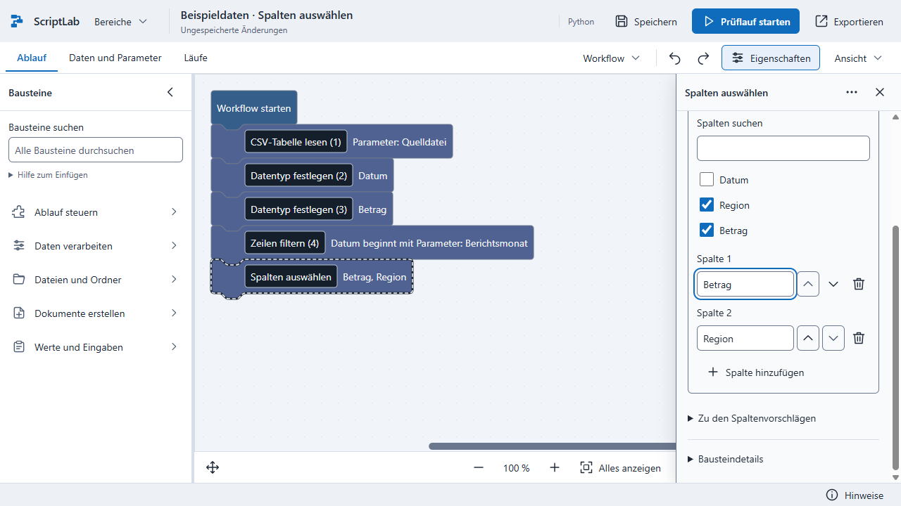
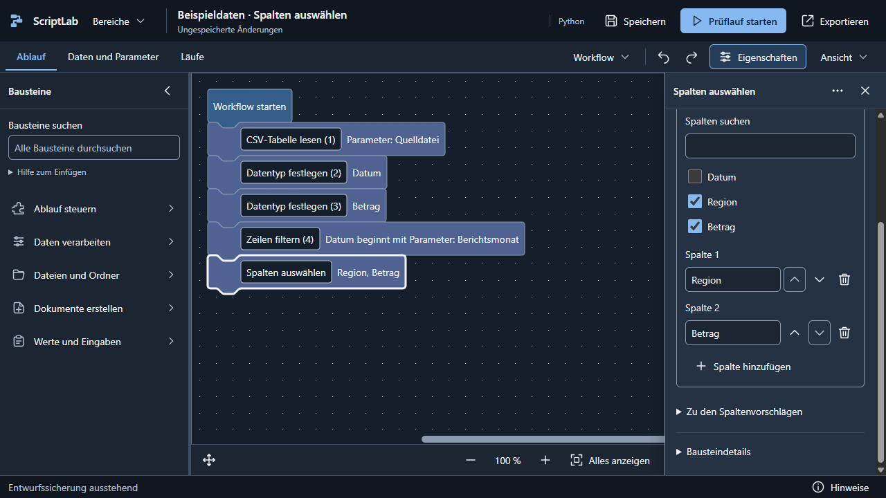
Bedingungen und Datenfunktionen
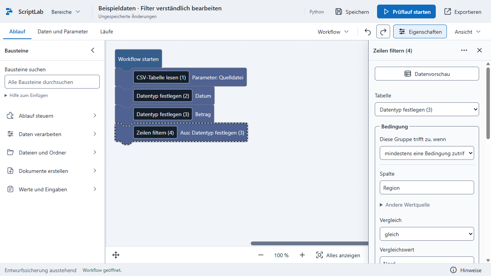
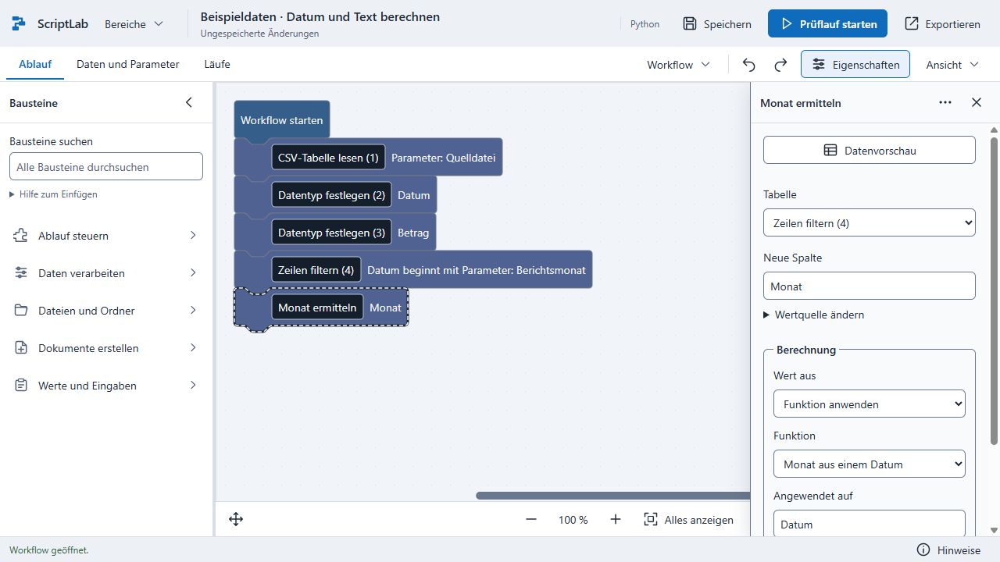
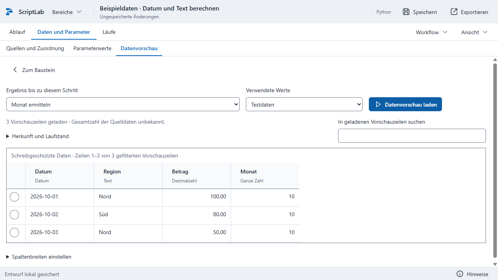
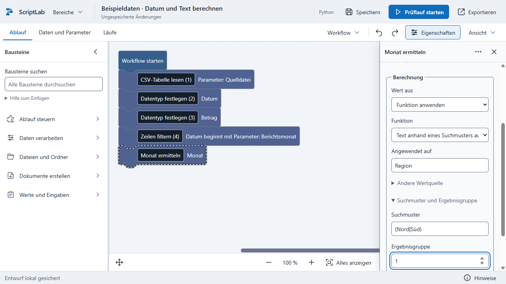
Passende Felder für Qualitätsprüfungen
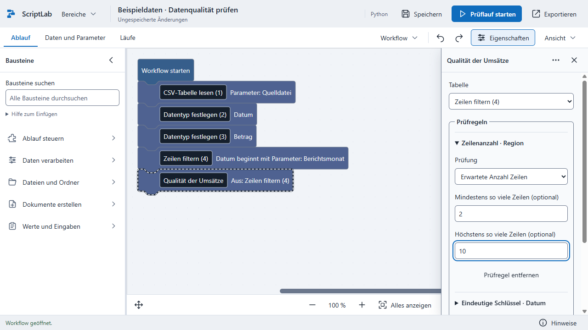
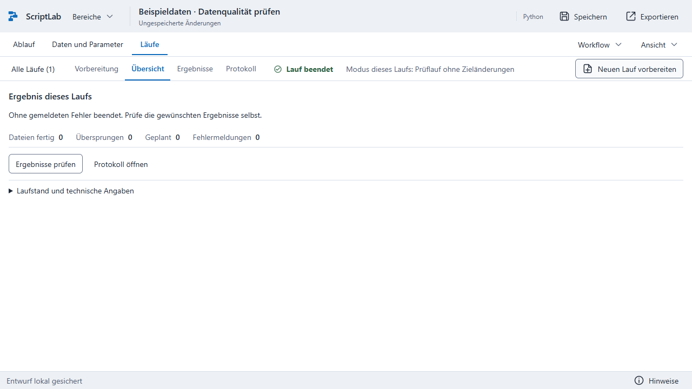
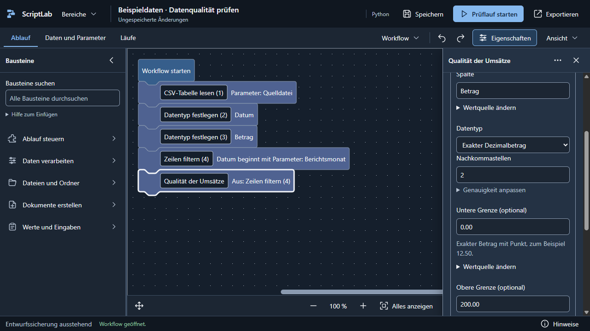
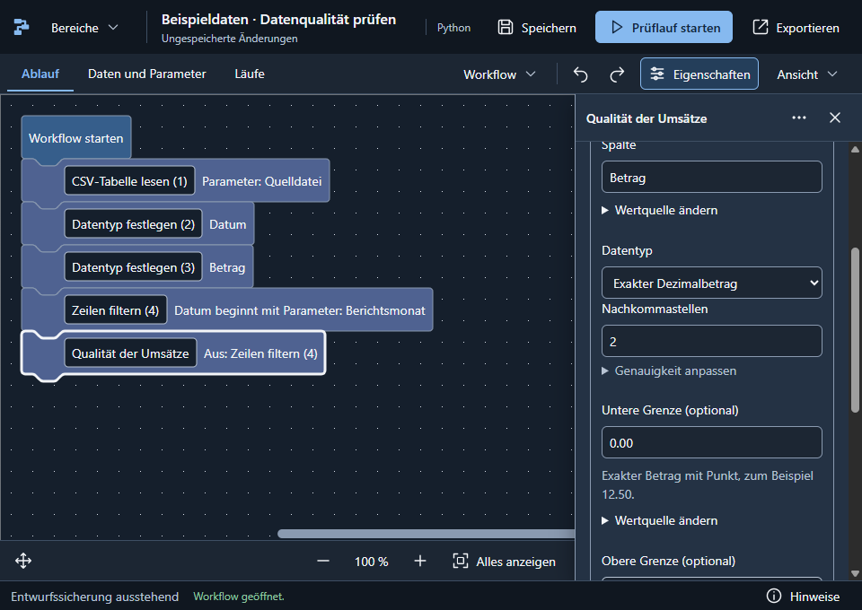
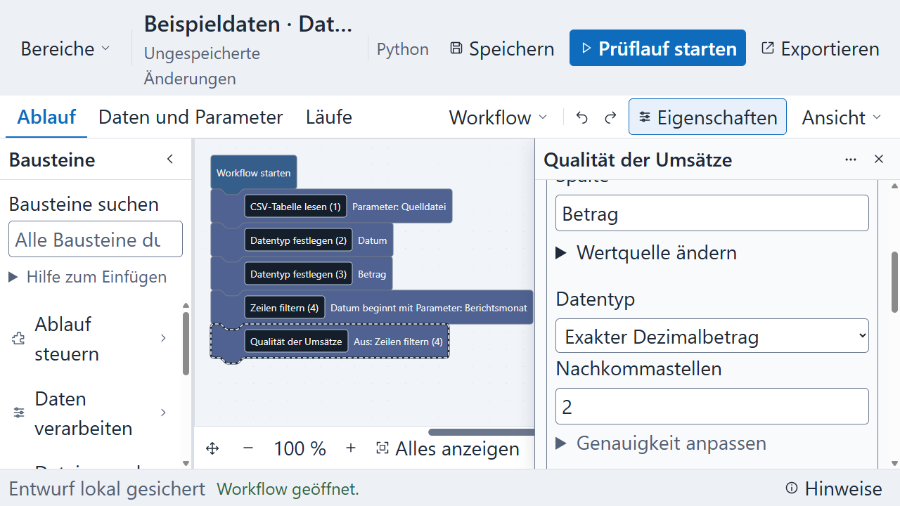
Vorlage und Ausgabeziel
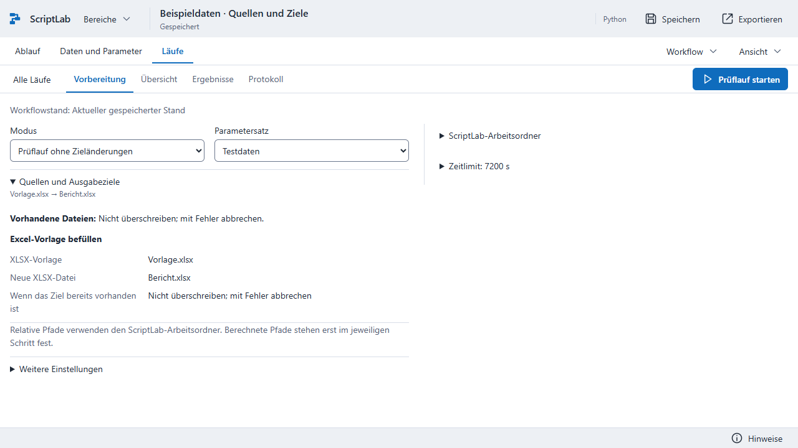
Konfigurierte Rollen in der Vorbereitung. Diese Aufnahme beinhaltet keine Verarbeitung der
Vorlagendatei.